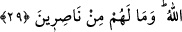

Yine bu âyette işâret vardır ki Allah insana, onun sıfatlarının zulümâtının eserlerini
yok edecek şekilde cemal ve celâlinin nurlarıyla tecellî edince, artık o Allah Teâlâ’ya
zâtının ve sıfatlarının kemâl üzere olmasında ortak olmaz. Bilakis hakîkatte kemâl Allah
Teâlâ’ya mahsustur. Onun tecellî ehlinden hiç kimse Allâh’ın kendisine hulûl ettiğini,
kendisinin Allah Teâlâ’nın bir cüz’ü olduğunu, kulun Hak, Hakk’ın da kul olduğunu
zannetmesin. Kimsenin cüz’ü ve benzeri olmamak, Allâh’ın kibriyâsındandır. Kimsenin
de O’nun cüzü olmaması yine Allâh’ın azametindendir. “O’nun benzeri hiçbir şey
yoktur. O işitendir, görendir.” (eş-Şûrâ, 42/11).
“İşte biz âyetlerimizi,” Allâh’ın birliğinin (vahdet) delillerini “aklını kullanacak”
işleri ve temsilleri/misalleri düşünme konusunda akıllarını kullanan “bir kavim için
böylece” yâni bu açık seçik açıklama gibi “açıklıyoruz.” ki bundan daha ileri bir
açıklama yoktur. Çünkü temsîl; akıl ile idrâk edilen mânâları, hissedilen şeyler
sûretinde tasvir etmektir. Onun için de çok açık seçik olur. Ancak câhiller ve zâlimler
bu sözlerin hakikatinden habersizdirler.
Sonra Allah onları muhatab almayı bıraktı ve onların Hakk’a tâbi olmalarının
imkansızlığını açıklamak üzere şöyle buyurdu:
29. Gel gör ki haksızlık edenler, kötü arzularına uydular. Allâh’ın saptırdığını kim
doğru yola eriştirebilir? Onlar için herhangi bir yardımcı yoktur.
“Gel gör ki haksızlık edenler, bilgisizce” yâni yaptıklarının câhili oldukları ve hiçbir
şey onları ondan alıkoymadığı halde -Çünkü âlim/bilen kimse hevâsına uyduğu zaman
ilmi onu bundan alıkoyabilir- “kötü arzularına uydular” yâni onlar hiçbir şeye
akıllarını yormadılar, bilakis kendi arzularına uydular. Hevâ, nefsin şehvete
meyletmesidir. İsm-i mevsûlun “ (onlar)” zamiri yerine konulması, bu uyma konusunda
onların zâlimler olduklarını tescil etmek içindir.
“Allâh’ın saptırdığını” yâni irâdesini dalâleti/sapıklığı kesbetmeye sarfetmesi
sebebiyle Allâh’ın kendisinde dalâleti yarattığı kimseyi “kim doğru yola eriştirebilir?”
Allâh’ın yolunu kaybettirdiği kimseyi tevhîde/doğru yola eriştirecek kim vardır? Yâni
kimse onu hidâyete/doğru yola eriştiremez.
“Onlar” yâni Allah Teâlâ’nın saptırdığı kimseler “için” kendilerini dalâletten
kurtaracak ve dalâletin âfetlerinden muhâfaza edecek “herhangi bir yardımcı yoktur.”
Yâni onlardan hiçbiri için bir tek yardımcı yoktur. “Onlar” zamirinin çoğul olarak
kullanılması, mânâ bakımındandır. Onlarla müşrikler kasdedilmiştir.
Keşfü’l-esrâr’da der ki: “Bu âyette ıdlâlin/dalâlete düşürmenin Allah tarafından